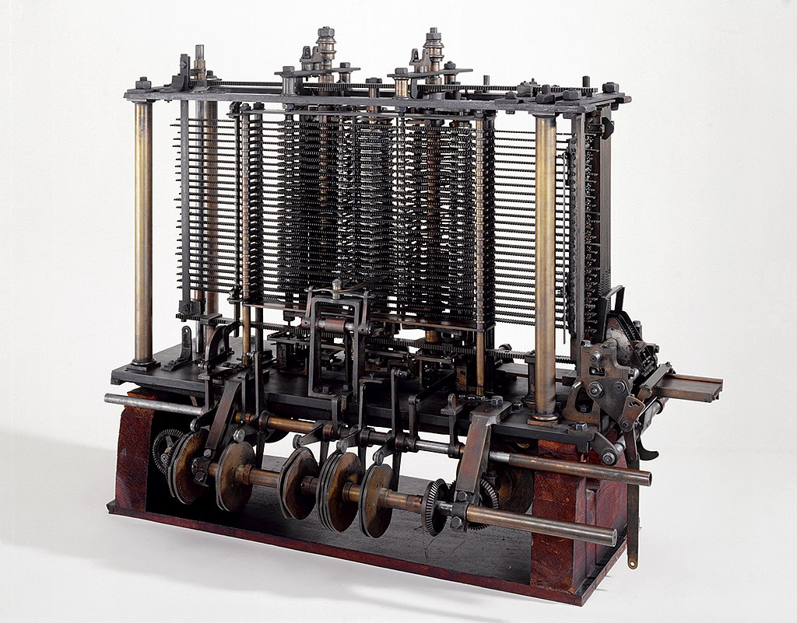
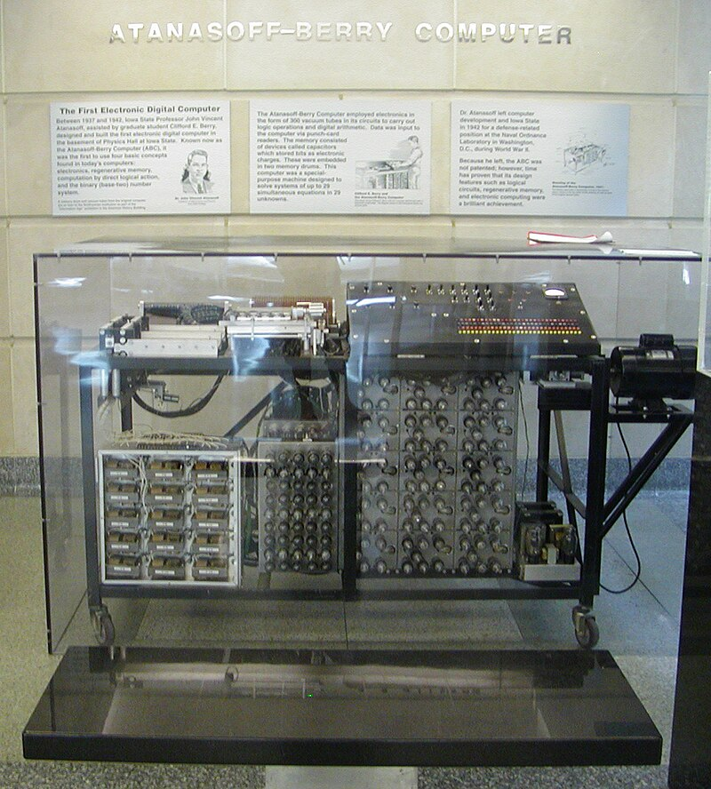
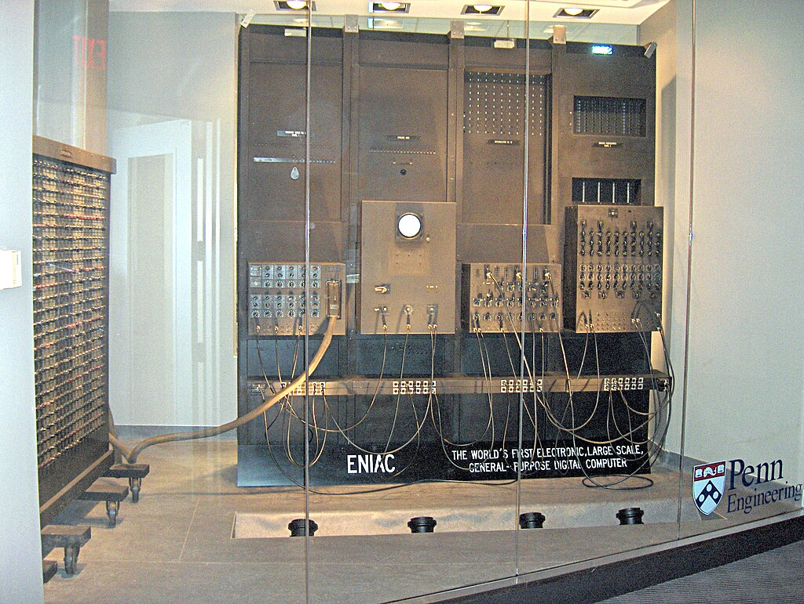
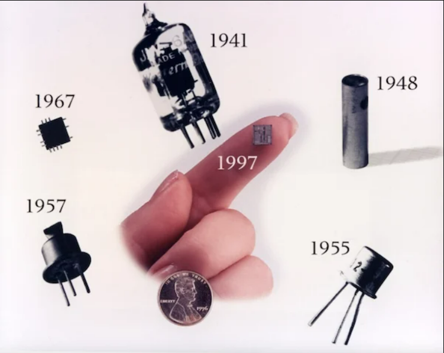
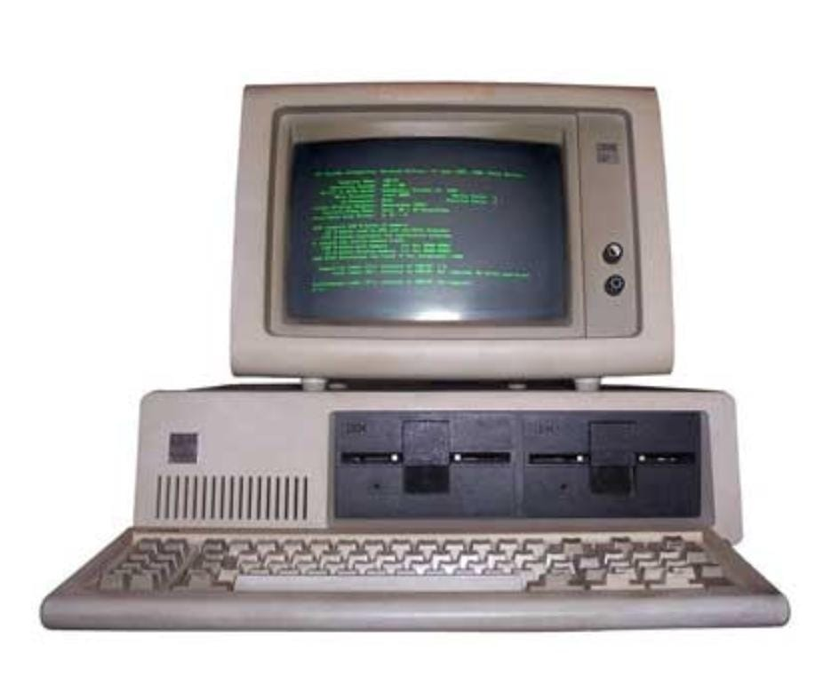
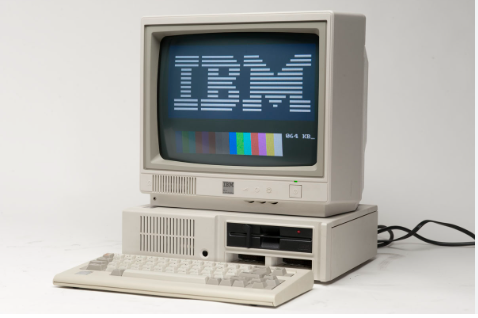
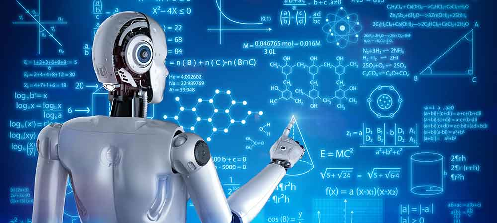
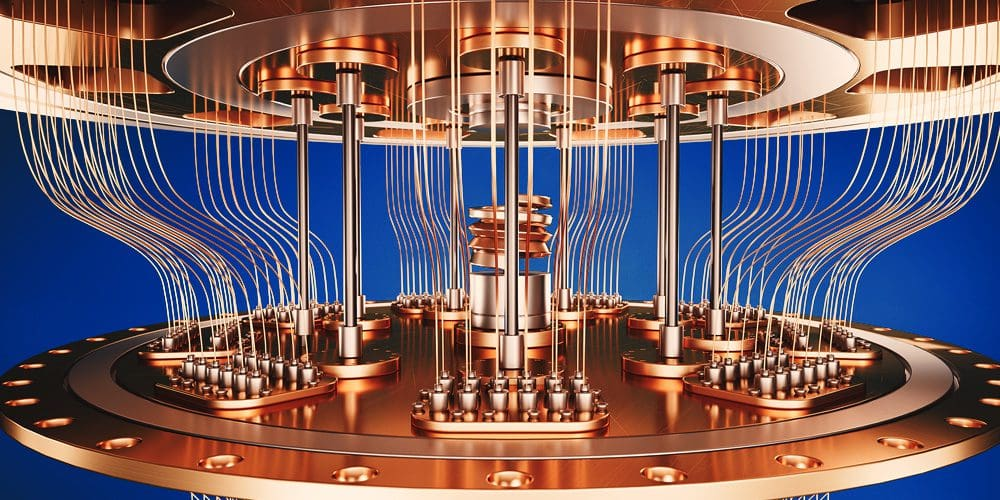

Analytical Engine (~1837)
Brief Description
The Analytical Engine, conceived by Charles Babbage in the 19th century, is considered the first computer. It was designed as a general-purpose computing machine, an advancement from Babbage's earlier Difference Engine. Though never fully completed, the Analytical Engine laid the foundation for modern computer architecture.
Performance Impact
The Analytical Engine included a memory store ("the store") and a processing unit ("the mill"). Although limited by the technology of its time and never fully completed, its design allowed for programming via punched cards, enabling varied calculations. The Analytical Engine's revolutionary concepts paved the way for future computer technology.
Atanasoff–Berry Computer (1939–1942)
Brief Description
The Atanasoff-Berry Computer (ABC) is recognized as an early digital computer developed by John Vincent Atanasoff and Clifford Berry between 1937 and 1942. It challenged the prevailing belief that Colossus and ENIAC were the first electronic digital computers. Atanasoff's special-purpose computer explored the use of capacitors for binary data storage and electronic logic circuits for arithmetic operations. This pioneering work laid the groundwork for future computer designs.
Performance Impact
Although its development was cut short by World War II, the ABC showcased several innovative features that significantly influenced the evolution of computing. Its use of approximately 300 vacuum tubes for control and arithmetic operations, binary numbers, logic operations, memory capacitors, and punched cards for input/output represented a significant step forward. The ABC's architecture and concepts, particularly its use of electronic components for calculation, demonstrated a path toward faster and more efficient computing. Furthermore, the sharing of Atanasoff's work with John Mauchly, another early computer pioneer, highlights its role in disseminating crucial ideas that shaped the development of subsequent computers.
Colossus (1943–1944)

Brief Description
Colossus was the first large-scale electronic computer, becoming operational in 1944 at Bletchley Park, Britain's code-breaking headquarters during World War II. It was designed to decipher encrypted German military transmissions, specifically those generated by the "Tunny" cipher machine. These "Fish" transmissions, based on teleprinter technology, used a binary code similar to modern computers. Colossus played a crucial role in the Allied war effort by enabling the rapid decryption of high-level German communications.
Performance Impact
Colossus significantly accelerated the Tunny code-breaking process, which was essential for accessing top-level messages from Hitler and his high command. By processing binary code at electronic speeds, Colossus enabled British codebreakers to decipher messages that rivaled or exceeded Enigma in importance. This ability to quickly decrypt German communications provided invaluable intelligence on enemy strategies and troop movements, directly impacting the course of battles in Europe and North Africa. Colossus demonstrated the potential of electronic computing to solve complex problems, paving the way for future advancements in computer technology and its application to various fields beyond code-breaking.
First Generation: Vacuum Tubes (1940s–1950s)
Brief Description
ENIAC, the first programmable general-purpose electronic digital computer, was built in the United States during World War II. Led by John Mauchly, J. Presper Eckert, Jr., and their team at the Moore School of Electrical Engineering, the government-funded project aimed to create an all-electronic computer. Work on ENIAC began in early 1943, with mathematician John von Neumann joining as a consultant the following year.
Performance Impact
While designed specifically for calculating artillery range tables, ENIAC lacked some features for broader use. Its programming relied on plugboards, enabling electronic-speed execution but requiring days to rewire for new problems, limiting its programmability. Despite these limitations, ENIAC was the most powerful calculating device of its time. Like Babbage's Analytical Engine and Colossus, it featured conditional branching, allowing for more flexible problem-solving beyond its initial purpose. ENIAC was an enormous machine, occupying a large basement space and containing over 17,000 vacuum tubes and numerous other components. It consumed significant power, generated substantial heat, and required its own air conditioning system. However, it could perform up to 5,000 additions per second, far exceeding the speed of electromechanical computers. ENIAC, completed in 1946, was initially used for hydrogen bomb calculations, demonstrating the potential of electronic computers for complex scientific and military applications. Its legacy as a first-generation computer is preserved with a portion of the machine on display at the Smithsonian Institution.
Second Generation: Transistors (1950s–1960s)
Brief Description
Second-generation computers, emerging in the late 1950s and 1960s, replaced vacuum tubes with transistors. Transistors were smaller, more reliable, and consumed less power, leading to more compact and energy-efficient machines. This shift marked a significant advancement in computer technology, enabling the development of more powerful and practical systems. These computers also began to utilize high-level programming languages like FORTRAN and COBOL, making them easier to program and use.
Performance Impact
The transition to transistors resulted in computers that were significantly faster, more reliable, and less expensive than their first-generation counterparts. Reduced size and power consumption allowed for increased computational capabilities and broader accessibility. The introduction of high-level programming languages simplified software development, enabling programmers to write more complex and sophisticated applications. These improvements paved the way for the wider adoption of computers in business, science, and engineering, accelerating technological progress and transforming various industries.
Third Generation: Integrated Circuits (1960s–1970s)
Brief Description
The third generation of computers (1965-1971) was characterized by the use of Integrated Circuits (ICs), replacing individual transistors. An IC, or chip, integrated numerous transistors, resistors, and capacitors onto a single piece of material, drastically reducing size and increasing efficiency. Jack Kilby's invention of the IC led to more reliable and faster computers, revolutionizing the industry.
Performance Impact
The introduction of ICs significantly improved computer performance, making them smaller, faster, and more reliable than previous generations. This miniaturization allowed for increased computing power in a smaller footprint, leading to reduced costs and greater accessibility. Furthermore, third-generation computers saw the emergence of innovative concepts like remote processing, time-sharing, and multiprogramming. These advancements optimized resource utilization and enabled multiple users to interact with a single computer simultaneously, greatly enhancing efficiency and productivity.
Fourth Generation: Microprocessors & Personal Computers (1971–1980s)
Brief Description
The fourth generation (1971-1980s) witnessed the advent of microprocessors, which packed entire computer processing units onto a single chip. This miniaturization led to the development of personal computers (PCs), making computing accessible to individuals and small businesses. The Intel 4004, the first commercially available microprocessor, marked the beginning of this revolution, paving the way for more powerful and affordable computing.
Performance Impact
Microprocessors dramatically reduced the size and cost of computers, leading to the widespread adoption of personal computers. This accessibility empowered individuals with unprecedented computing capabilities, transforming homes, offices, and industries. The rise of PCs fueled innovation in software development, leading to user-friendly operating systems, productivity applications, and engaging games. The fourth generation revolutionized how people interacted with technology, setting the stage for the interconnected and digital world we live in today. The development of the microprocessor also allowed for greater processing speeds and memory capacity, leading to more powerful and versatile machines.
Internet & Networking (1960s–1990s)

Brief Description
The period from the 1960s to the 1990s saw the rise of the Internet and widespread computer networking. This era focused on connecting individual computers, enabling them to share resources and communicate with each other. Key developments included the creation of ARPANET (the precursor to the Internet), the development of TCP/IP protocols, and the invention of the World Wide Web.
Performance Impact
The development of the Internet and networking technologies revolutionized communication and information sharing. It enabled near-instantaneous global communication, facilitated collaboration across geographical boundaries, and provided access to vast amounts of information. Businesses could operate more efficiently, researchers could collaborate more effectively, and individuals could connect with each other in unprecedented ways. The Internet and networking laid the foundation for e-commerce, social media, and the digital economy, profoundly shaping society and driving innovation across numerous sectors.
Cloud Computing (1990s–2000s)
Brief Description
In the late 1990s and 2000s, cloud computing revolutionized access to IT resources. Instead of companies managing their own servers and software, they could tap into a shared pool of resources online. This shift, driven by virtualization and large data centers, offered a flexible and cost-effective alternative.
Performance Impact
Cloud computing revolutionized IT infrastructure and application deployment by offering scalability, flexibility, and cost efficiency. Businesses could quickly scale their resources up or down based on demand, reducing capital expenditures and operational overhead. This model enabled faster innovation, improved collaboration, and access to advanced technologies for organizations of all sizes. Cloud computing has become the foundation for many modern applications and services, driving digital transformation and enabling new business models.
Artificial Intelligence (1950s–Present)
Brief Description
Artificial Intelligence (AI) has been a field of study since the 1950s, aiming to create machines capable of intelligent behavior. Early AI research focused on symbolic reasoning and problem-solving. Over time, AI has evolved to encompass machine learning, deep learning, natural language processing, computer vision, and robotics.
Performance Impact
AI has had a transformative impact across numerous industries and aspects of life. It powers recommendation systems, virtual assistants, medical diagnoses, autonomous vehicles, and fraud detection systems. AI-driven automation has increased efficiency and productivity, while AI-powered insights have enabled better decision-making. As AI continues to advance, it promises to further revolutionize industries, improve human capabilities, and address complex societal challenges.
Quantum Computing (Emerging)
Brief Description
Quantum computing is an emerging field that leverages the principles of quantum mechanics to perform computations. Unlike classical computers that use bits to represent information as 0s or 1s, quantum computers use qubits. Qubits can exist in a superposition of both 0 and 1 simultaneously, and they can also be entangled, enabling quantum computers to perform certain calculations much faster than classical computers.
Performance Impact
While still in its early stages of development, quantum computing holds the potential to revolutionize fields such as medicine, materials science, cryptography, and optimization. It could enable the discovery of new drugs and materials, break modern encryption algorithms, and solve complex optimization problems that are intractable for classical computers. As quantum computing technology matures, it is expected to have a profound impact on science, technology, and society.